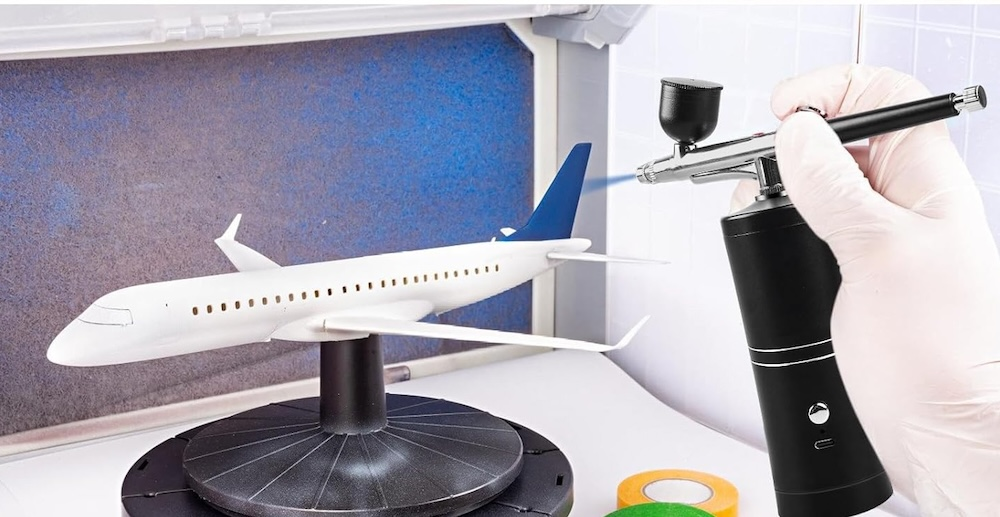
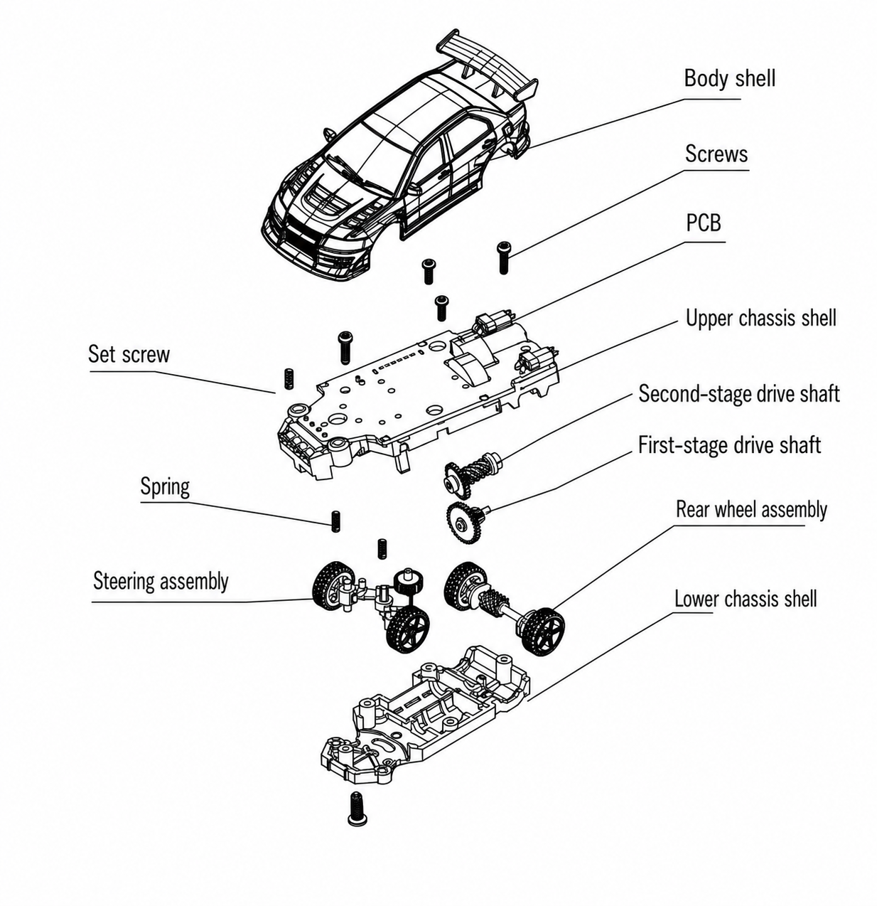
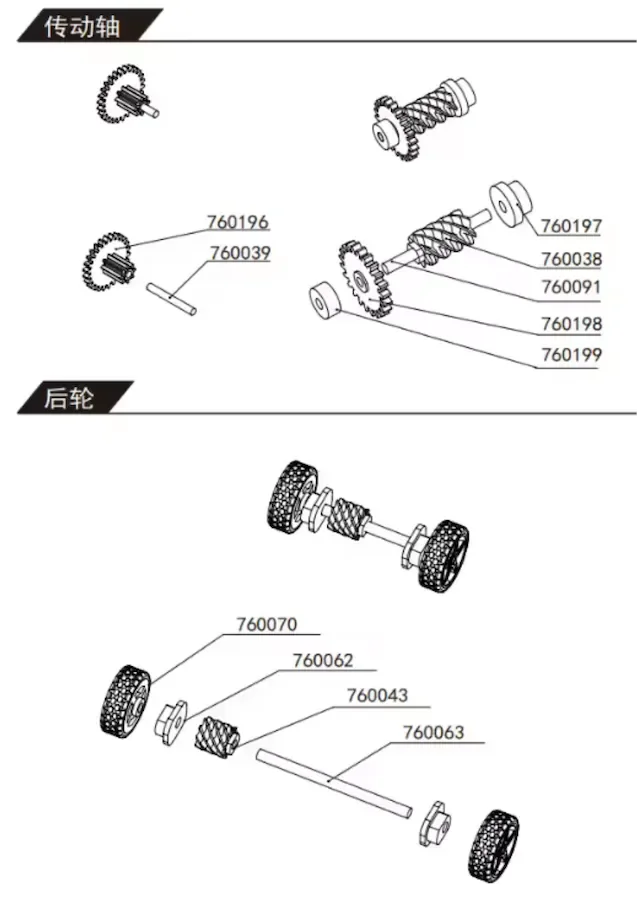
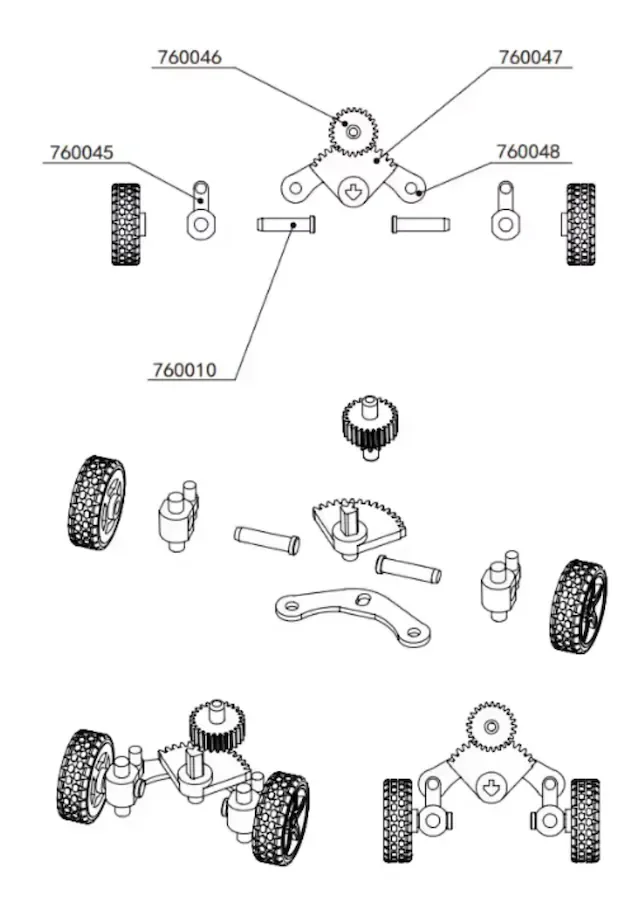
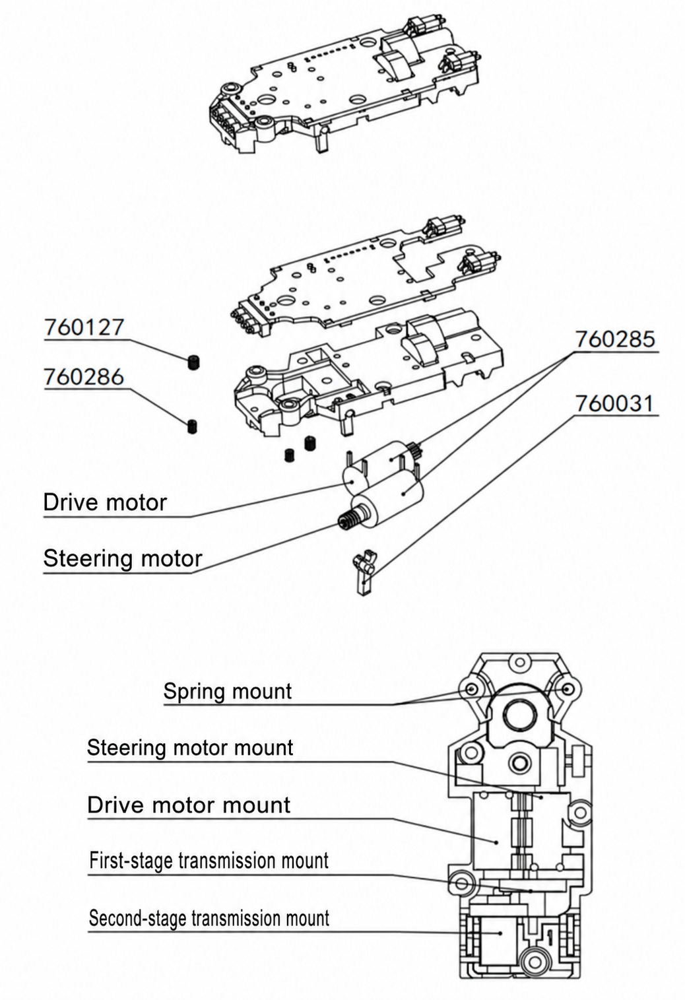

Piloter · atelier
Entretien & personnalisation
Une 1/76 bien entretenue va plus vite qu’une 1/76 modifiée. L’esprit de la catégorie est de rester proche de la série : ce qui reste à faire, c’est la propreté — et la peinture.
- Routine ≈ 1 min
- Entre chaque batterie
- Charge jamais à chaud
Une minute entre chaque batterie suffit. Cheveux retirés à la pincette (30 s), pneus essuyés au chiffon humide (15 s), roues vérifiées libres (10 s), puis charge une fois la batterie refroidie. C’est le meilleur gain de vitesse disponible, et il est gratuit.
La routine, batterie par batterie
Les axes de roues
Cheveux et fibres retirés à la pincette autour des axes. C’est la première cause de perte de vitesse, loin devant toutes les autres.
Les pneus
Essuyés au chiffon légèrement humide, puis séchés. Aucun produit miracle ne fait mieux.
Les roues à la main
Elles doivent tourner libres, sans point dur. Un point dur signale une fibre coincée ou un axe forcé.
La charge
Batterie refroidie, puis rechargée. Jamais de charge sur une LiPo chaude : c’est ce qui la tue en une saison.
Le rangement
Tapis roulé sans plier les bordures, voitures rangées à plat.
Atelier
Peindre ses carrosseries
Le kit livre deux carrosseries vierges : c’est l’invitation. Dégraisse, applique une peinture pour polycarbonate en couches très fines depuis l’intérieur, laisse sécher entre les passes, puis pose les stickers de numéro.
Une flotte où chacun reconnaît sa voiture d’un coup d’œil change complètement l’ambiance d’une course — et c’est la seule personnalisation que le règlement encourage.


Savoir ce qu’on nettoie
Les deux ensembles qui s’encrassent


Arbre de transmission Train arrière

Vues éclatées issues de la documentation Turbo Racing.
Ce qu’on ne modifie pas
Moteur, électronique et pignons restent d’origine
C’est le pacte qui rend la catégorie intéressante : à matériel identique, le classement récompense le pilotage. Si tu veux jouer avec les rapports et les moteurs, les échelles supérieures sont faites pour ça. Ici, la seule modification qui compte, c’est celle de ton geste.